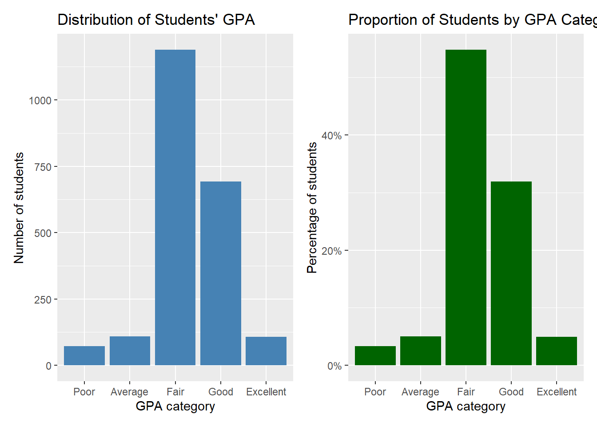
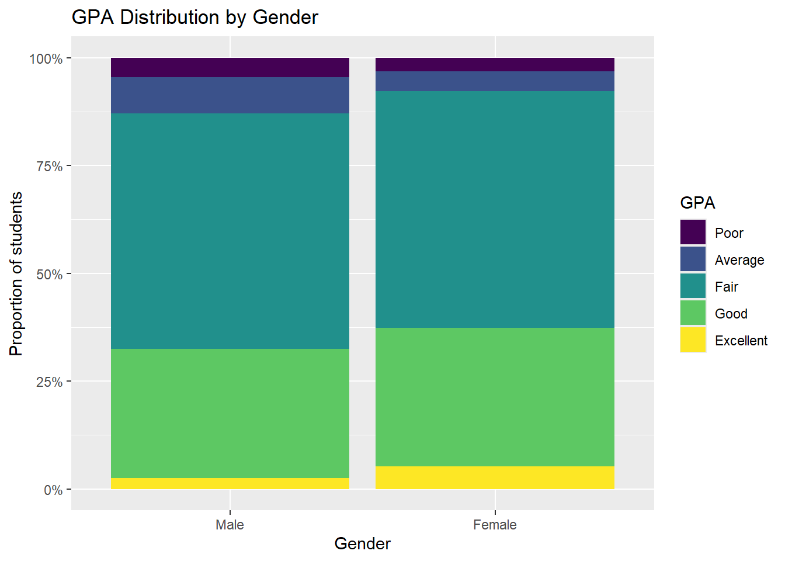
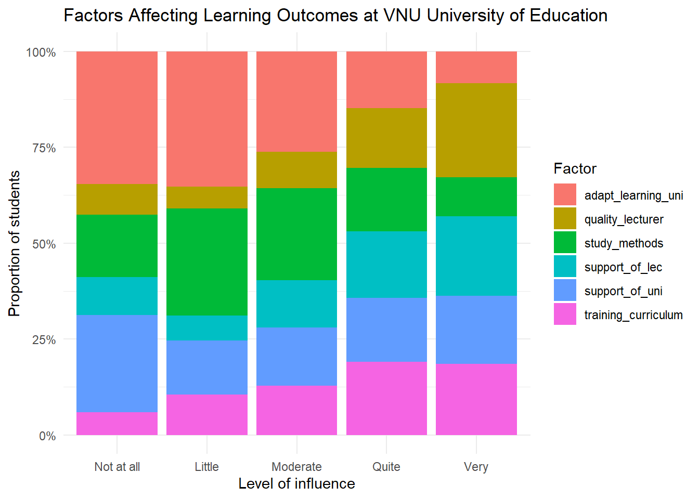
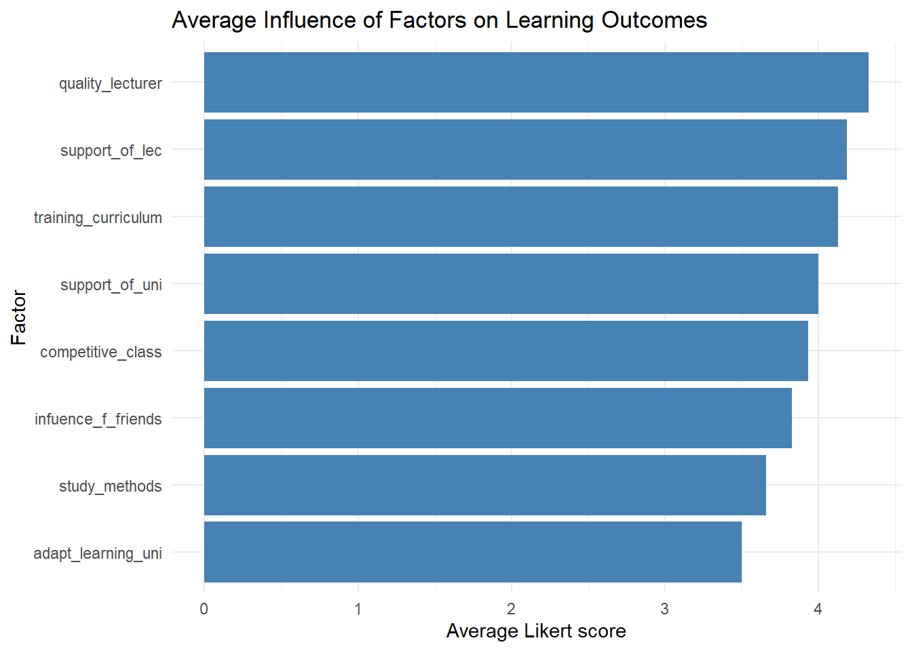
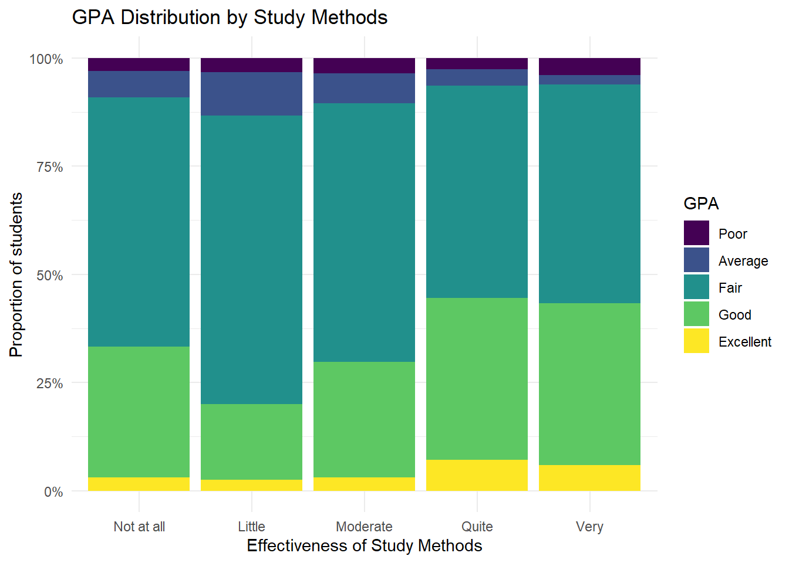
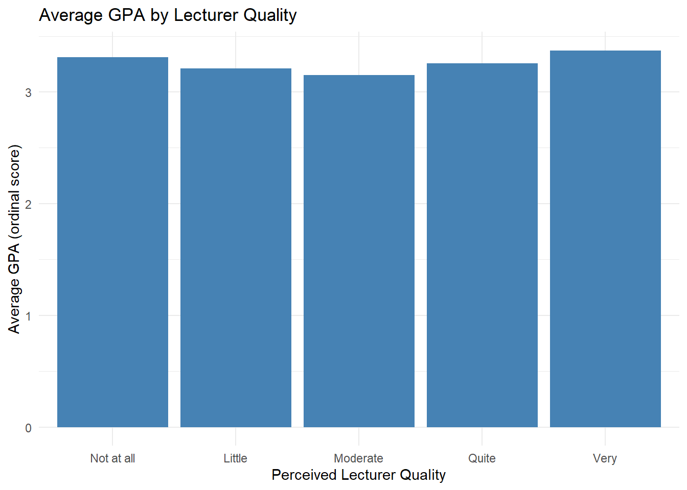
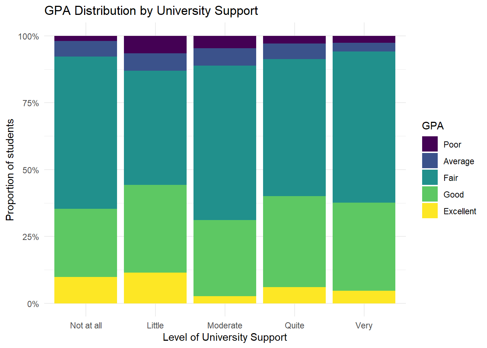
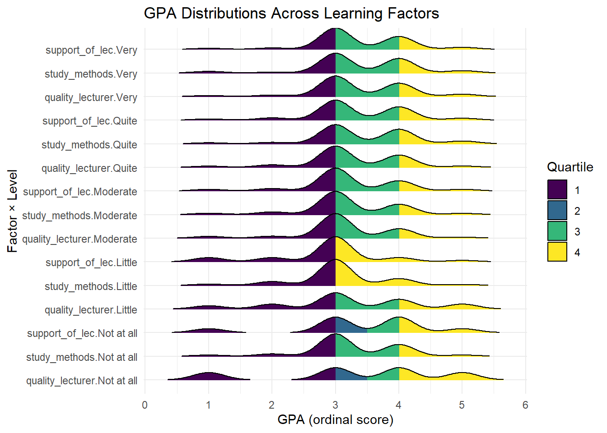
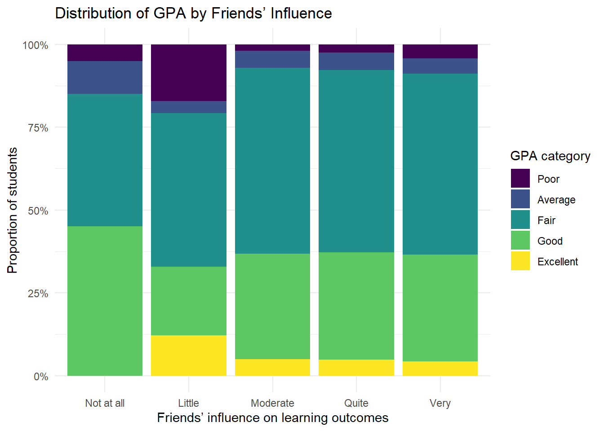
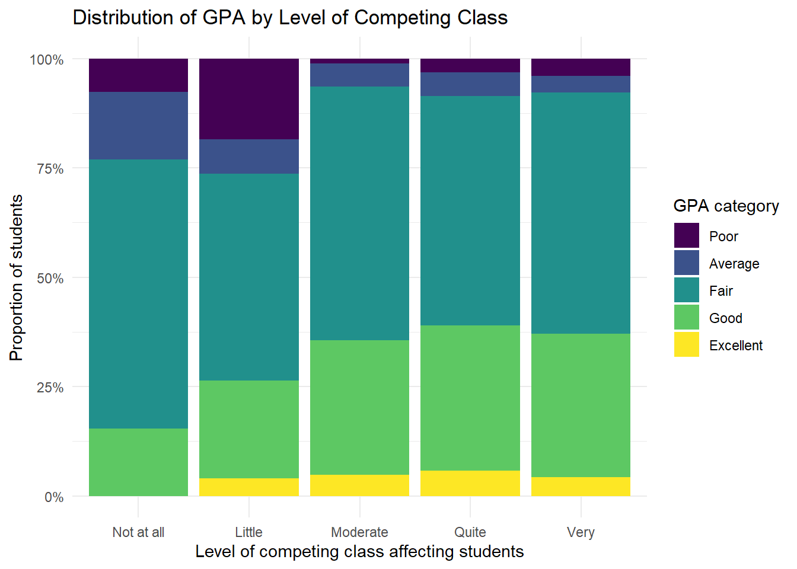

pacman::p_load(ggstatsplot, tidyverse,ggrepel, patchwork, janitor,colorspaces,ggstatsplot,ggdist,ggridges,FunnelPlotR,knitr,gganimate,gifski,gapminder,
ggthemes, hrbrthemes,
tidyverse,readxl)Take-home_Ex1
1 Visual Analytics Take Home Assignment
1.1 Overview
This handout provides the context, task, expectations and grading criteria of Take-home Exercise 1. Students must review and understand them before getting started with the take-home exercise.
1.2 Setting the scene
Survey analysis is the process of transforming raw survey data into decision-relevant insights. It focuses on identifying patterns, trends, and relationships within responses by using descriptive methods (such as counts, percentages, and averages) as well as inferential methods (such as correlations and significance tests) to interpret results and inform decision-making.
1.3 The Task
For this take-home exercise, students are required to select one of the survey datasets below and apply appropriate, visually-driven survey analysis methods to reveal and communicate at least five and no more than ten key observations derived from their analysis.
Above dataset is used for the subsequent pre-processing and analysis.
1.4 Getting Started
We load the following R packages using the pacman::p_load() function:
- ggstatsplot: Extends ggplot2 by adding statistical tests, effect sizes, and annotations directly to plots
- tidyverse: Core collection of R packages designed for data science (e.g.,
dplyr,ggplot2,tidyr,readr) - ggrepel: Provides geoms for ggplot2 to repel overlapping text labels
- patchwork: To prepare composite figures created using ggplot2
- janitor: Tools for cleaning data, especially column names and tabulations
- colorspace: Advanced color palette tools and color space manipulation for visualizations
- ggdist: For visualizations of distributions and uncertainty (e.g., intervals, slabs, and half-eye plots)
- ggridges: To plot ridgeline (joy) plots for visualizing distributions
- FunnelPlotR: To create funnel plots commonly used in meta-analysis and institutional performance comparisons
- knitr: To generate dynamic reports and tables in R Markdown
- gganimate: To create animated ggplot2 visualizations
- gifski: Renders animations from gganimate into GIF files
- gapminder: Provides the Gapminder dataset for teaching and demonstrating data visualization
- ggthemes: Additional themes and scales for ggplot2
- hrbrthemes: Typography-focused themes for professional-quality ggplot2 graphics
- readxl: To read Excel files (
.xlsand.xlsx) into R
Import Package
1.5 Import Data
raw <- read_excel("data/Database paper.xlsx") %>%
janitor::clean_names()
raw# A tibble: 2,170 × 22
year gender policy_stu minority_stu poor_stu father_edu mother_edu
<dbl> <dbl> <dbl> <dbl> <dbl> <dbl> <dbl>
1 5 2 2 2 2 4 4
2 5 1 2 2 2 3 3
3 5 2 2 2 2 4 4
4 5 2 2 2 2 5 4
5 5 1 1 2 2 2 3
6 5 2 2 2 2 5 5
7 5 2 2 2 2 6 5
8 5 2 2 2 2 5 4
9 5 2 2 2 2 5 5
10 5 2 2 2 2 5 4
# ℹ 2,160 more rows
# ℹ 15 more variables: father_occupation <dbl>, mother_occupation <dbl>,
# time_friends <dbl>, time_socical_media <dbl>, time_studying <dbl>,
# gpa <dbl>, adapt_learning_uni <dbl>, study_methods <dbl>,
# support_of_uni <dbl>, support_of_lec <dbl>, facilitie_uni <dbl>,
# quality_lecturer <dbl>, training_curriculum <dbl>, competitive_class <dbl>,
# infuence_f_friends <dbl>1.6 Data Pre-processing
1.6.1 Glimpse of data
By using the glimpse() function, the dataset consists of 2,170 rows and 22 columns.
glimpse(raw)Rows: 2,170
Columns: 22
$ year <dbl> 5, 5, 5, 5, 5, 5, 5, 5, 5, 5, 5, 5, 5, 5, 5, 5, 5,…
$ gender <dbl> 2, 1, 2, 2, 1, 2, 2, 2, 2, 2, 1, 2, 2, 2, 2, 2, 2,…
$ policy_stu <dbl> 2, 2, 2, 2, 1, 2, 2, 2, 2, 2, 2, 2, 2, 1, 2, 2, 2,…
$ minority_stu <dbl> 2, 2, 2, 2, 2, 2, 2, 2, 2, 2, 2, 2, 2, 2, 2, 2, 2,…
$ poor_stu <dbl> 2, 2, 2, 2, 2, 2, 2, 2, 2, 2, 2, 2, 2, 2, 2, 2, 2,…
$ father_edu <dbl> 4, 3, 4, 5, 2, 5, 6, 5, 5, 5, 3, 3, 3, 3, 3, 4, 5,…
$ mother_edu <dbl> 4, 3, 4, 4, 3, 5, 5, 4, 5, 4, 3, 3, 3, 4, 3, 4, 5,…
$ father_occupation <dbl> 2, 2, 1, 1, 3, 1, 1, 5, 1, 3, 3, 3, 3, 3, 2, 2, 4,…
$ mother_occupation <dbl> 3, 4, 2, 1, 3, 2, 4, 3, 1, 3, 3, 3, 3, 3, 2, 2, 4,…
$ time_friends <dbl> 2, 1, 1, 2, 1, 1, 2, 2, 1, 3, 2, 2, 2, 2, 2, 1, 3,…
$ time_socical_media <dbl> 2, 3, 2, 2, 2, 3, 2, 2, 2, 2, 2, 1, 2, 2, 2, 3, 4,…
$ time_studying <dbl> 5, 5, 5, 5, 1, 2, 5, 5, 5, 5, 5, 5, 5, 1, 5, 5, 5,…
$ gpa <dbl> 4, 3, 4, 4, 4, 4, 3, 5, 5, 3, 3, 4, 4, 3, 5, 4, 4,…
$ adapt_learning_uni <dbl> 4, 3, 4, 4, 5, 4, 4, 4, 4, 3, 4, 4, 4, 5, 4, 4, 5,…
$ study_methods <dbl> 4, 3, 4, 4, 5, 4, 4, 4, 4, 4, 4, 4, 4, 5, 4, 3, 5,…
$ support_of_uni <dbl> 3, 3, 4, 5, 5, 5, 5, 5, 4, 5, 4, 4, 4, 5, 4, 4, 5,…
$ support_of_lec <dbl> 4, 4, 4, 5, 5, 4, 5, 4, 4, 5, 4, 4, 4, 5, 4, 4, 5,…
$ facilitie_uni <dbl> 4, 4, 3, 5, 5, 5, 5, 4, 4, 5, 4, 4, 4, 5, 4, 3, 5,…
$ quality_lecturer <dbl> 4, 3, 4, 5, 5, 5, 4, 5, 5, 5, 4, 4, 4, 5, 4, 4, 5,…
$ training_curriculum <dbl> 4, 3, 4, 4, 5, 4, 5, 4, 4, 5, 4, 4, 4, 5, 4, 3, 5,…
$ competitive_class <dbl> 3, 3, 4, 4, 4, 3, 4, 3, 4, 4, 4, 4, 4, 5, 4, 4, 5,…
$ infuence_f_friends <dbl> 3, 4, 4, 4, 5, 3, 5, 4, 4, 4, 4, 4, 4, 5, 4, 5, 4,…1.6.2 Check for duplication
By using the duplicated function,
raw[duplicated(raw),]# A tibble: 226 × 22
year gender policy_stu minority_stu poor_stu father_edu mother_edu
<dbl> <dbl> <dbl> <dbl> <dbl> <dbl> <dbl>
1 5 2 2 2 2 5 5
2 5 1 2 2 2 5 5
3 5 1 2 2 2 3 3
4 5 2 2 2 2 4 3
5 5 2 2 2 2 3 3
6 5 2 2 2 2 6 6
7 5 2 2 2 2 5 5
8 5 2 2 2 2 5 5
9 5 2 2 2 2 5 5
10 5 2 1 2 2 4 3
# ℹ 216 more rows
# ℹ 15 more variables: father_occupation <dbl>, mother_occupation <dbl>,
# time_friends <dbl>, time_socical_media <dbl>, time_studying <dbl>,
# gpa <dbl>, adapt_learning_uni <dbl>, study_methods <dbl>,
# support_of_uni <dbl>, support_of_lec <dbl>, facilitie_uni <dbl>,
# quality_lecturer <dbl>, training_curriculum <dbl>, competitive_class <dbl>,
# infuence_f_friends <dbl>Since this is a survey data with no id, the duplication is normal(no unique combination row).
1.6.3 Filtering data for selected variables
| Variable Name | Description | Type of Variable |
|---|---|---|
| Year | Student’s current year of study (1 = First-year, 2 = Second-year, 3 = Third-year, 4 = Fourth-year, 5 = Graduated) | Ordinal |
| Gender | Student’s gender (1 = Male, 2 = Female) | Categorical unordered |
| Policy_Stu | Whether the student receives government policy support (1 = Yes, 2 = No) | Categorical unordered |
| Minority_Stu | Whether the student belongs to a minority group (1 = Yes, 2 = No) | Categorical unordered |
| Poor_Stu | Whether the student’s household is classified as poor (1 = Yes, 2 = No) | Categorical unordered |
| Father_Edu | Father’s highest educational attainment (1 = Primary, 2 = Secondary, 3 = High school, 4 = College, 5 = University/Graduate, 6 = Other) | Ordinal |
| Mother_Edu | Mother’s highest educational attainment (1 = Primary, 2 = Secondary, 3 = High school, 4 = College, 5 = University/Graduate, 6 = Other) | Ordinal |
| Father_Occupation | Father’s occupation status (1 = Government employee, 2 = Self-employed, 3 = Freelance, 4 = Other, 5 = Not public) | Categorical unordered |
| Mother_Occupation | Mother’s occupation status (1 = Government employee, 2 = Self-employed, 3 = Freelance, 4 = Other, 5 = Not public) | Categorical unordered |
| Time_Friends | Average daily time spent hanging out with friends (1 = Under 1 hour, 5 = Over 4 hours) | Ordinal |
| Time_SocicalMedia | Average daily time spent on social media (1 = Under 1 hour, 5 = Over 4 hours) | Ordinal |
| Time_Studying | Average daily time spent studying (1 = Under 2 hours, 5 = Over 8 hours) | Ordinal |
| GPA | Cumulative GPA category (1 = Poor, 5 = Excellent) | Ordinal |
| Adapt_Learning_Uni | Level of adaptation to the university learning environment (1 = Not at all, 5 = Very) | Ordinal |
| Study_Methods | Degree to which study methods affect learning outcomes (1 = Not at all, 5 = Very) | Ordinal |
| SupportOf_Uni | Perceived level of university support (1 = Not at all, 5 = Very) | Ordinal |
| SupportOf_Lec | Perceived level of lecturer support (1 = Not at all, 5 = Very) | Ordinal |
| Facilitie_Uni | Responsiveness of university facilities (1 = Not at all, 5 = Very) | Ordinal |
| Quality_Lecturer | Perceived quality of university lecturers (1 = Not at all, 5 = Very) | Ordinal |
| TrainingCurriculum | Suitability of the university curriculum (1 = Not at all, 5 = Very) | Ordinal |
| Competitive_Class | Impact of class competition on the student (1 = Not at all, 5 = Very) | Ordinal |
| InfuenceF_Friends | Influence of classmates/friends on learning outcomes (1 = Not at all, 5 = Very) | Ordinal |
1.6.4 Check data structure
By using the str() function, we observe that some variables may need to be re-casted.
str(raw)tibble [2,170 × 22] (S3: tbl_df/tbl/data.frame)
$ year : num [1:2170] 5 5 5 5 5 5 5 5 5 5 ...
$ gender : num [1:2170] 2 1 2 2 1 2 2 2 2 2 ...
$ policy_stu : num [1:2170] 2 2 2 2 1 2 2 2 2 2 ...
$ minority_stu : num [1:2170] 2 2 2 2 2 2 2 2 2 2 ...
$ poor_stu : num [1:2170] 2 2 2 2 2 2 2 2 2 2 ...
$ father_edu : num [1:2170] 4 3 4 5 2 5 6 5 5 5 ...
$ mother_edu : num [1:2170] 4 3 4 4 3 5 5 4 5 4 ...
$ father_occupation : num [1:2170] 2 2 1 1 3 1 1 5 1 3 ...
$ mother_occupation : num [1:2170] 3 4 2 1 3 2 4 3 1 3 ...
$ time_friends : num [1:2170] 2 1 1 2 1 1 2 2 1 3 ...
$ time_socical_media : num [1:2170] 2 3 2 2 2 3 2 2 2 2 ...
$ time_studying : num [1:2170] 5 5 5 5 1 2 5 5 5 5 ...
$ gpa : num [1:2170] 4 3 4 4 4 4 3 5 5 3 ...
$ adapt_learning_uni : num [1:2170] 4 3 4 4 5 4 4 4 4 3 ...
$ study_methods : num [1:2170] 4 3 4 4 5 4 4 4 4 4 ...
$ support_of_uni : num [1:2170] 3 3 4 5 5 5 5 5 4 5 ...
$ support_of_lec : num [1:2170] 4 4 4 5 5 4 5 4 4 5 ...
$ facilitie_uni : num [1:2170] 4 4 3 5 5 5 5 4 4 5 ...
$ quality_lecturer : num [1:2170] 4 3 4 5 5 5 4 5 5 5 ...
$ training_curriculum: num [1:2170] 4 3 4 4 5 4 5 4 4 5 ...
$ competitive_class : num [1:2170] 3 3 4 4 4 3 4 3 4 4 ...
$ infuence_f_friends : num [1:2170] 3 4 4 4 5 3 5 4 4 4 ...1.6.5 Re-casting variables
Re-cast variables for interpretability in later visualization,
raw$gender <- factor(raw$gender,
levels = c(1, 2),
labels = c("Male", "Female"))raw$year <- factor(raw$year,
levels = c(1, 2, 3, 4, 5),
labels = c("First-year", "Second-year", "Third-year",
"Fourth-year", "Graduated"),
ordered = TRUE)raw$policy_stu <- factor(raw$policy_stu,
levels = c(1, 2),
labels = c("Yes", "No"))raw$minority_stu <- factor(raw$minority_stu,
levels = c(1, 2),
labels = c("Yes", "No"))raw$poor_stu <- factor(raw$poor_stu,
levels = c(1, 2),
labels = c("Yes", "No"))raw$father_edu <- factor(raw$father_edu,
levels = c(1, 2, 3, 4, 5, 6),
labels = c("Primary school", "Secondary school",
"High school", "College",
"University/Graduate", "Other"),
ordered = TRUE)raw$mother_edu <- factor(raw$mother_edu,
levels = c(1, 2, 3, 4, 5, 6),
labels = c("Primary school", "Secondary school",
"High school", "College",
"University/Graduate", "Other"),
ordered = TRUE)raw$father_occupation <- factor(raw$father_occupation,
levels = c(1, 2, 3, 4, 5),
labels = c("Government employee",
"Self-employed",
"Freelance",
"Other",
"Not public"))raw$mother_occupation <- factor(raw$mother_occupation,
levels = c(1, 2, 3, 4, 5),
labels = c("Government employee",
"Self-employed",
"Freelance",
"Other",
"Not public"))raw$time_friends <- factor(raw$time_friends,
levels = c(1, 2, 3, 4, 5),
labels = c("Under 1 hour",
"1–<2 hours",
"2–<3 hours",
"3–<4 hours",
"Over 4 hours"),
ordered = TRUE)raw$time_socical_media <- factor(raw$time_socical_media,
levels = c(1, 2, 3, 4, 5),
labels = c("Under 1 hour",
"1–<2 hours",
"2–<3 hours",
"3–<4 hours",
"Over 4 hours"),
ordered = TRUE)raw$time_studying <- factor(raw$time_studying,
levels = c(1, 2, 3, 4, 5),
labels = c("Under 2 hours",
"2–<4 hours",
"4–<6 hours",
"6–<8 hours",
"Over 8 hours"),
ordered = TRUE)raw$gpa <- factor(raw$gpa,
levels = c(1, 2, 3, 4, 5),
labels = c("Poor", "Average", "Fair",
"Good", "Excellent"),
ordered = TRUE)Re-cast likert-scale variables below,
likert_levels <- c(1, 2, 3, 4, 5)
likert_labels <- c("Not at all", "Little", "Moderate", "Quite", "Very")
raw$adapt_learning_uni <- factor(raw$adapt_learning_uni,
levels = likert_levels,
labels = likert_labels,
ordered = TRUE)
raw$study_methods <- factor(raw$study_methods,
levels = likert_levels,
labels = likert_labels,
ordered = TRUE)
raw$support_of_uni <- factor(raw$support_of_uni,
levels = likert_levels,
labels = likert_labels,
ordered = TRUE)
raw$support_of_lec <- factor(raw$support_of_lec,
levels = likert_levels,
labels = likert_labels,
ordered = TRUE)
raw$facilitie_uni <- factor(raw$facilitie_uni,
levels = likert_levels,
labels = likert_labels,
ordered = TRUE)
raw$quality_lecturer <- factor(raw$quality_lecturer,
levels = likert_levels,
labels = likert_labels,
ordered = TRUE)
raw$training_curriculum <- factor(raw$training_curriculum,
levels = likert_levels,
labels = likert_labels,
ordered = TRUE)
raw$competitive_class <- factor(raw$competitive_class,
levels = likert_levels,
labels = likert_labels,
ordered = TRUE)
raw$infuence_f_friends <- factor(raw$infuence_f_friends,
levels = likert_levels,
labels = likert_labels,
ordered = TRUE)1.6.6 Check Missing Values
colSums(is.na(raw)) year gender policy_stu minority_stu
0 0 0 0
poor_stu father_edu mother_edu father_occupation
0 0 0 0
mother_occupation time_friends time_socical_media time_studying
0 0 0 0
gpa adapt_learning_uni study_methods support_of_uni
0 0 0 0
support_of_lec facilitie_uni quality_lecturer training_curriculum
0 0 0 0
competitive_class infuence_f_friends
0 0 Preview Pre-Processed Dataframe
head(raw,20)# A tibble: 20 × 22
year gender policy_stu minority_stu poor_stu father_edu mother_edu
<ord> <fct> <fct> <fct> <fct> <ord> <ord>
1 Graduated Female No No No College College
2 Graduated Male No No No High school High scho…
3 Graduated Female No No No College College
4 Graduated Female No No No University/Grad… College
5 Graduated Male Yes No No Secondary school High scho…
6 Graduated Female No No No University/Grad… Universit…
7 Graduated Female No No No Other Universit…
8 Graduated Female No No No University/Grad… College
9 Graduated Female No No No University/Grad… Universit…
10 Graduated Female No No No University/Grad… College
11 Graduated Male No No No High school High scho…
12 Graduated Female No No No High school High scho…
13 Graduated Female No No No High school High scho…
14 Graduated Female Yes No No High school College
15 Graduated Female No No No High school High scho…
16 Graduated Female No No No College College
17 Graduated Female No No No University/Grad… Universit…
18 Graduated Female No No No University/Grad… Universit…
19 Graduated Female No No No University/Grad… Universit…
20 Graduated Female No No No Secondary school High scho…
# ℹ 15 more variables: father_occupation <fct>, mother_occupation <fct>,
# time_friends <ord>, time_socical_media <ord>, time_studying <ord>,
# gpa <ord>, adapt_learning_uni <ord>, study_methods <ord>,
# support_of_uni <ord>, support_of_lec <ord>, facilitie_uni <ord>,
# quality_lecturer <ord>, training_curriculum <ord>, competitive_class <ord>,
# infuence_f_friends <ord>1.7 Visualization Analytics
1.7.1 Plot1: Distribution of students performance
p1 <- ggplot(raw, aes(x = gpa)) +
geom_bar(fill = "steelblue") +
labs(
title = "Distribution of Students' GPA",
x = "GPA category",
y = "Number of students"
)p2 <- ggplot(raw, aes(x = gpa)) +
geom_bar(aes(y = after_stat(prop), group = 1),
fill = "darkgreen") +
scale_y_continuous(labels = scales::percent) +
labs(
title = "Proportion of Students by GPA Category",
x = "GPA category",
y = "Percentage of students"
)p1 +p2
1.7.1.1 Visualization plot1 analysis:
This proportion bar chart emphasizes the relative composition of GPA categories rather than absolute count. Over Half of the student are concentrated in the fair category, while approximately one-third achieve good GPAs. The Poor and Excellent categories account for only a small proportion of students, reinforcing the observation that extreme academic outcomes are rare. By using percentages, this visualization allows easier comparison and interpretation, especially when comparing results across different samples. The chart highlights that most students perform at a satisfactory but not outstanding level, suggesting that improvements in teaching or learning strategies could meaningfully shift overall academic outcomes.
1.7.2 Visualization Plot2: Distribution of students performance By Gender
ggplot(raw, aes(x = gender, fill = gpa)) +
geom_bar(position = "fill") +
scale_y_continuous(labels = scales::percent) +
labs(
title = "GPA Distribution by Gender",
x = "Gender",
y = "Proportion of students",
fill = "GPA"
)
1.7.2.1 Visualization Plot2 Analysis:
The stacked proportion bar chart compares GPA distributions between male and female students. Both genders show similar patterns, with the largest share of students in the fair and good categories. However, female students appear to have a slightly higher proportion in the good and excellent categories while male students show a marginally higher proportion in the fair category. Differences are modest, indicating that gender-based disparities in academic performance are limited in this sample. This visualization is effective becuase it compares relative distributions rather than raw counts allowing a fair comparison between genders even if group sizes differ.
1.7.3 Visualization Plot3: Proportional Likert Distribution of Learning Factors
raw %>%
select(adapt_learning_uni,
study_methods,
support_of_uni,
support_of_lec,
quality_lecturer,
training_curriculum) %>%
pivot_longer(cols = everything(),
names_to = "factor",
values_to = "response") %>%
ggplot(aes(x = response, fill = factor)) +
geom_bar(position = "fill") +
scale_y_continuous(labels = scales::percent) +
labs(
title = "Factors Affecting Learning Outcomes at VNU University of Education",
x = "Level of influence",
y = "Proportion of students",
fill = "Factor"
) +
theme_minimal()
1.7.3.1 Visualization Plot3 Analysis:
This stacked proportional bar chart illustrates how students rate the influence of different factors on their learning outcomes. Across all factors, responses are concentrated in the Moderate, Quite, and Very categories, indicating that students generally perceive these factors as influential. Quality of lecturers and support from lecturers show stronger concentrations in the higher influence levels, suggesting their central role in shaping learning outcomes. In contrast, adaptation to the university environment displays a wider spread across influence levels, implying greater variation in student experiences. By presenting proportions rather than raw counts, the visualization allows meaningful comparison across factors while respecting the ordinal nature of the Likert scale.
1.7.4 Visualization Plot4: Average Influence of Factors on Learning Outcomes
raw %>%
select(adapt_learning_uni,
study_methods,
support_of_uni,
support_of_lec,
quality_lecturer,
training_curriculum,
competitive_class,
infuence_f_friends) %>%
pivot_longer(cols = everything(),
names_to = "factor",
values_to = "score") %>%
group_by(factor) %>%
summarise(mean_score = mean(as.numeric(score))) %>%
ggplot(aes(x = reorder(factor, mean_score), y = mean_score)) +
geom_col(fill = "steelblue") +
coord_flip() +
labs(
title = "Average Influence of Factors on Learning Outcomes",
x = "Factor",
y = "Average Likert score"
) +
theme_minimal()
1.7.4.1 Visualization Plot4 Analysis:
This horizontal bar chart summarizes the average Likert scores for each factor, providing a clear ranking of perceived influence. Quality of lecturers emerges as the most influential factor, followed closely by lecturer support and training curriculum. Institutional support and competitive class environment occupy the middle range, while study methods and adaptation to the university environment show slightly lower average scores. Although mean values should be interpreted cautiously for ordinal data, this visualization offers a concise comparative overview that complements the proportional distribution shown in the first plot. Together, the figures highlight the dominant importance of teaching quality and academic support in student learning outcomes at VNU University of Education.
1.7.5 Visualization Plot5: GPA distribution by study methods
ggplot(raw, aes(x = study_methods, fill = gpa)) +
geom_bar(position = "fill") +
scale_y_continuous(labels = scales::percent) +
labs(
title = "GPA Distribution by Study Methods",
x = "Effectiveness of Study Methods",
y = "Proportion of students",
fill = "GPA"
) +
theme_minimal()
1.7.5.1 Visualization Plot5 Analysis:
This visualization shows how GPA outcomes vary with perceived study-method effectiveness. Students reporting Quite or Very effective study methods have higher proportions of Good and Excellent GPAs, while lower GPA categories are more common among those reporting weaker study methods. This suggests that effective learning strategies are strongly associated with better academic performance.
1.7.6 Visualization Plot5: GPA distribution by study methods
raw %>%
group_by(quality_lecturer) %>%
summarise(mean_gpa = mean(as.numeric(gpa))) %>%
ggplot(aes(x = quality_lecturer, y = mean_gpa)) +
geom_col(fill = "steelblue") +
labs(
title = "Average GPA by Lecturer Quality",
x = "Perceived Lecturer Quality",
y = "Average GPA (ordinal score)"
) +
theme_minimal()
1.7.6.1 Visualization Plot5 Analysis:
This chart demonstrates a positive trend between perceived lecturer quality and average GPA. Students who rate lecturer quality more highly tend to achieve higher GPA categories. Although GPA is ordinal, the increasing pattern suggests that teaching quality plays an important role in shaping academic outcomes.
1.7.7 Visualization Plot7: GPA by university support level
ggplot(raw, aes(x = support_of_uni, fill = gpa)) +
geom_bar(position = "fill") +
scale_y_continuous(labels = scales::percent) +
labs(
title = "GPA Distribution by University Support",
x = "Level of University Support",
y = "Proportion of students",
fill = "GPA"
) +
theme_minimal()
1.7.7.1 Visualization Plot7 Analysis:
This visualization highlights how institutional support relates to GPA outcomes. Higher levels of perceived university support correspond to a greater share of students achieving Good and Excellent GPAs. Conversely, lower support levels are associated with more Fair and Average outcomes, indicating that institutional resources and services contribute meaningfully to academic success.
1.7.8 Visualization Plot8: GPA Distributions Across Learning Factors
raw %>%
select(gpa,
study_methods,
quality_lecturer,
support_of_lec) %>%
pivot_longer(-gpa,
names_to = "factor",
values_to = "level") %>%
filter(!is.na(gpa), !is.na(level)) %>%
ggplot(aes(
x = as.numeric(gpa),
y = interaction(factor, level),
fill = factor(stat(quantile))
)) +
geom_density_ridges_gradient(
calc_ecdf = TRUE,
quantiles = 4,
scale = 1.1,
rel_min_height = 0.01
) +
scale_fill_viridis_d(name = "Quartile") +
labs(
title = "GPA Distributions Across Learning Factors",
x = "GPA (ordinal score)",
y = "Factor × Level"
) +
theme_minimal()
1.7.8.1 Visualization Plot8 Analysis:
This ridgeline plot illustrates how GPA distributions vary across levels of key learning factors, including study methods, lecturer quality, and lecturer support. Across all three factors, higher influence levels (Quite and Very) show GPA distributions that are visibly shifted toward higher ordinal scores, with greater density in the Good and Excellent categories. In contrast, lower influence levels (Not at all and Little) display distributions concentrated at lower GPA scores, particularly around Fair. The quartile shading further highlights this pattern, as upper quartiles dominate at higher GPA levels when perceived influence increases. These consistent shifts across multiple factors suggest a strong positive association between effective teaching, supportive academic environments, and students’ academic performance. Overall, the visualization indicates that improvements in instructional quality and learning support are likely linked to higher student GPA outcomes.
1.7.9.1 Visualization Plot9: Distributions of GPA by Friends’ Influence
ggplot(raw, aes(x = infuence_f_friends, fill = gpa)) +
geom_bar(position = "fill") +
scale_y_continuous(labels = scales::percent) +
labs(
title = "Distribution of GPA by Friends’ Influence",
x = "Friends’ influence on learning outcomes",
y = "Proportion of students",
fill = "GPA category"
) +
theme_minimal()
colnames(raw) [1] "year" "gender" "policy_stu"
[4] "minority_stu" "poor_stu" "father_edu"
[7] "mother_edu" "father_occupation" "mother_occupation"
[10] "time_friends" "time_socical_media" "time_studying"
[13] "gpa" "adapt_learning_uni" "study_methods"
[16] "support_of_uni" "support_of_lec" "facilitie_uni"
[19] "quality_lecturer" "training_curriculum" "competitive_class"
[22] "infuence_f_friends" 1.7.9.1 Visualization Plot9 Analysis:
This stacked proportion bar chart illustrates how GPA outcomes vary across levels of friends’ influence on learning. Across all influence levels, the Fair GPA category accounts for the largest proportion of students, indicating that moderate academic performance is common regardless of peer influence. However, as friends’ influence increases from Not at all to Very, there is a noticeable rise in the proportion of students achieving Good and Excellent GPAs, while the share of Poor and Average outcomes remains relatively small. This pattern suggests a positive association between stronger peer influence and higher academic achievement. Students who perceive their friends as more influential in learning contexts may benefit from peer support, motivation, or collaborative study behaviors. Overall, the visualization indicates that friends’ influence is linked to improved GPA distribution, though the effect appears gradual rather than dramatic.
1.7.10 Visualization Plot10: Distributions of GPA by Level of Competing Class
ggplot(raw, aes(x = competitive_class, fill = gpa)) +
geom_bar(position = "fill") +
scale_y_continuous(labels = scales::percent) +
labs(
title = "Distribution of GPA by Level of Competing Class",
x = "Level of competing class affecting students",
y = "Proportion of students",
fill = "GPA category"
) +
theme_minimal()
1.7.10.1 Visualization Plot10 Analysis:
This stacked proportion bar chart illustrates how GPA outcomes vary with students’ perceptions of class competitiveness. Across all competition levels, the Fair GPA category consistently represents the largest share of students, indicating that moderate academic performance is common regardless of competitive intensity. As the perceived level of competition increases from Not at all to Very, there is a noticeable rise in the proportion of students achieving Good and Excellent GPAs. Conversely, lower GPA categories (Poor and Average) remain relatively small and show no substantial increase at higher competition levels. This pattern suggests that a more competitive classroom environment may encourage higher academic achievement without significantly disadvantaging lower-performing students. Overall, the visualization indicates a modest positive association between class competitiveness and GPA, highlighting competition as a potential motivational factor in academic performance.
1.8 Summary:
This assignment examined factors affecting student learning outcomes using descriptive visualizations. GPA distributions showed that most students achieved Fair or Good performance, with limited extreme outcomes. Analyses across learning factors indicated that effective study methods, high-quality lecturers, institutional support, peer influence, and class competitiveness were positively associated with higher GPA categories. Overall, the findings suggest that both individual learning behaviors and supportive academic environments contribute meaningfully to student academic performance.